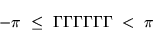

<!DOCTYPE HTML PUBLIC "-//W3C//DTD HTML 3.2 Final//EN">
<!-- Converted with jLaTeX2HTML 98.1p1 release (March 2nd, 1998) + JP patch 2.0 (March 16th, 1998)
patched by Kenshi Muto (mutou@three-a.co.jp), Three-A Systems,Co.,Ltd.
LaTeX2HTML 98.1p1 release (March 2nd, 1998)
originally by Nikos Drakos (nikos@cbl.leeds.ac.uk), CBLU, University of Leeds
* revised and updated by:  Marcus Hennecke, Ross Moore, Herb Swan
* with significant contributions from:
  Jens Lippmann, Marek Rouchal, Martin Wilck and others  -->
<HTML>
<HEAD>
<TITLE>log</TITLE>
<META NAME="description" CONTENT="log">
<META NAME="keywords" CONTENT="REFS">
<META NAME="resource-type" CONTENT="document">
<META NAME="distribution" CONTENT="global">
<META HTTP-EQUIV="Content-Type" CONTENT="text/html; charset=iso-2022-jp">
<LINK REL="STYLESHEET" HREF="REFS.css">
<LINK REL="next" HREF="node115.htm">
<LINK REL="previous" HREF="node113.htm">
<LINK REL="up" HREF="node4.htm">
<LINK REL="next" HREF="node115.htm">
</HEAD>
<BODY BGCOLOR=NavajoWhite>
<!-- Navigation Panel -->
<A NAME="tex2html2023"
 HREF="node115.htm">
</A> 
<A NAME="tex2html2020"
 HREF="node4.htm">
</A> 
<A NAME="tex2html2014"
 HREF="node113.htm">
</A> 
<A NAME="tex2html2022"
 HREF="node1.htm">
</A>  
<BR>
<STRONG> Next:</STRONG> <A NAME="tex2html2024"
 HREF="node115.htm">log10</A>
<STRONG> Up:</STRONG> <A NAME="tex2html2021"
 HREF="node4.htm">$B%j%U%!%l%s%9%^%K%e%"%k(J</A>
<STRONG> Previous:</STRONG> <A NAME="tex2html2015"
 HREF="node113.htm">load</A>
<BR>
<BR>
<!-- End of Navigation Panel -->

<H2><A NAME="SECTION0004110000000000000000">&#160;</A><A NAME="man_log">&#160;</A>
<BR>
log
</H2><FONT SIZE="-1"><FONT SIZE="-1"><FONT SIZE="-1"><FONT SIZE="-1"><FONT SIZE="-1"><FONT SIZE="-1"></FONT></FONT></FONT></FONT></FONT></FONT><DL COMPACT>

<DT>$B!ZL\E*![(J
<DD>log - $B<+A3BP?t(J
<DT>$B!Z7A<0![(J
<DD><PRE>
y = log(x)
   (Real   |Real|Complex) y;
   (Integer|Real|Complex) x;
  
Y = log(X)      Y = log(X)
   Array Y;        Matrix Y;
   Array X;        Matrix X;
</PRE><FONT SIZE="-1"><DT>$B!Z>\:Y![(J
<DD>log(x)$B$O!$%9%+%i7?(J($B@0?t(J, $B<B?t(J, $BJ#AG?t(J) x $B$N<+A3BP?t$r5a$a$k!#(J
X $B$,G[Ns$N$H$-!$(Jlog(X)$B$OG[Ns(J X $B$N3F@.J,$N<+A3BP?t$+$i$J$kG[Ns(J
Y $B$r5a$a$k!#(JY $B$NBg$-$5$O(J X $B$NBg$-$5$HF1$8$K$J$k!#(J
X $B$,9TNs$N$H$-!$(Jlog(X)$B$O(J X $B$N9TNsBP?t4X?t$r5a$a$k!#9TNs;X?t4X?t(J
$B$N5U4X?t$G$"$k9TNsBP?t4X?t$OB?2A4X?t$G$"$k$,!$CM$NHO0O$r(J
</FONT>
<BR><P></P>
<DIV ALIGN="CENTER">
<!-- MATH: \begin{displaymath}
-\pi\ \leq\ $B8GM-CM$N5uIt(J\ <\ \pi
\end{displaymath} -->



</DIV>
<BR CLEAR="ALL">
<P></P><FONT SIZE="-1">  
$B$N$h$&$K8BDj$7$?<gCM$,5a$a$i$l$k!#(J
<DT>$B!ZNcBj![(J
<DD></FONT><PRE>
&gt;&gt; y = log(2)
y = 0.693147
</PRE><FONT SIZE="-1"><FONT SIZE="-1"><DT>$B!Z;2>H![(J
<DD></FONT></FONT>
<DIV><TT>sin(<A HREF="node210.htm#man_sin">2.211</A>), cos(<A HREF="node39.htm#man_cos">2.36</A>), tan(<A HREF="node233.htm#man_tan">2.234</A>), log10(<A HREF="node115.htm#man_log10">2.116</A>), exp(<A HREF="node62.htm#man_exp">2.61</A>)
<BR></TT></DIV><FONT SIZE="-1"><FONT SIZE="-1"><FONT SIZE="-1"></DL><FONT SIZE="-1"><FONT SIZE="-1"><FONT SIZE="-1"></FONT></FONT></FONT></FONT></FONT></FONT>
<BR><HR>
<ADDRESS>
Masanobu KOGA
$BJ?@.(J11$BG/(J10$B7n(J2$BF|(J
</ADDRESS>
</BODY>
</HTML>
